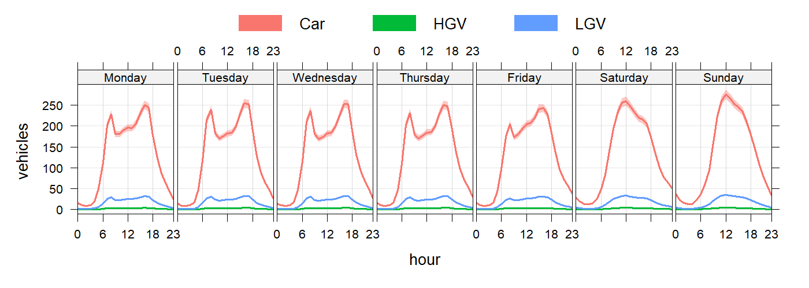
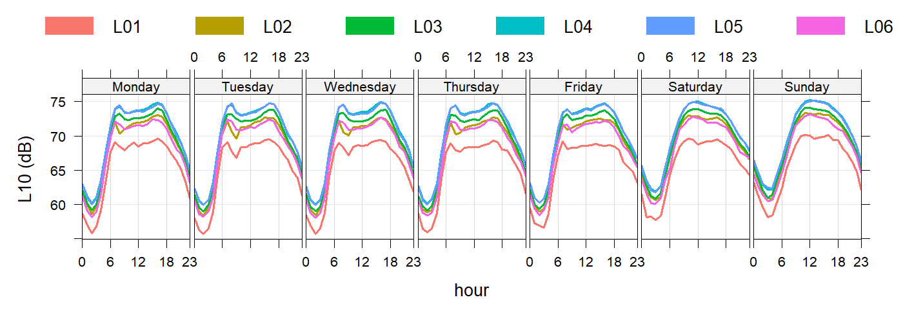
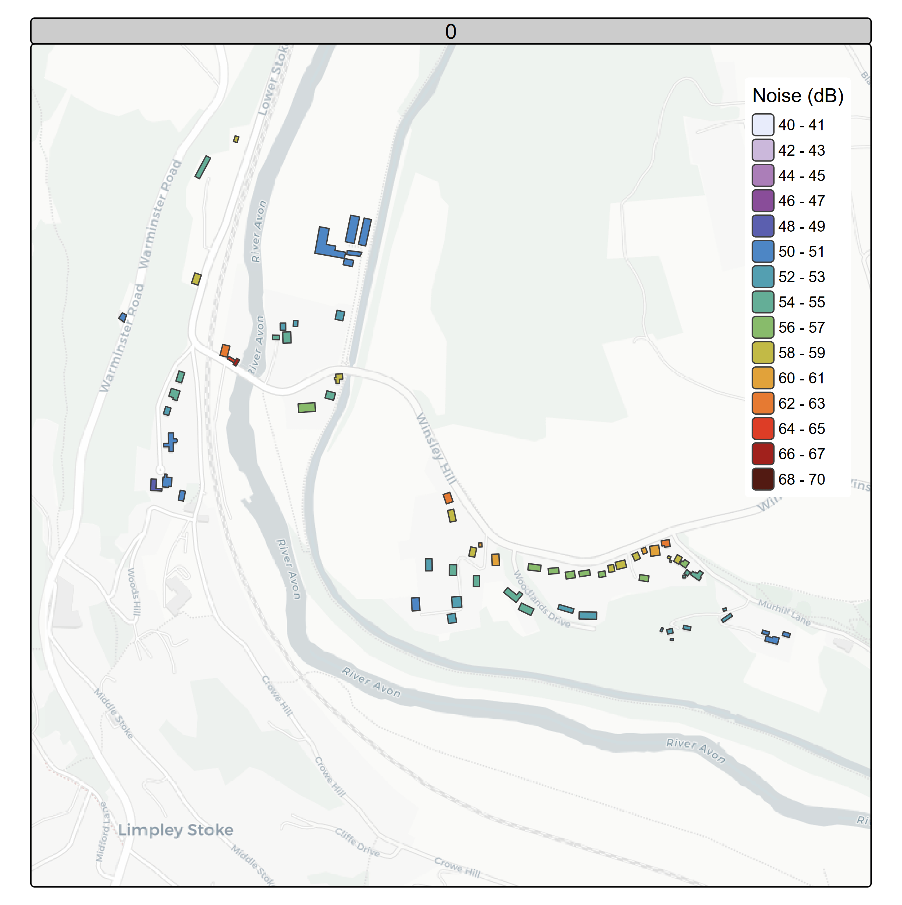
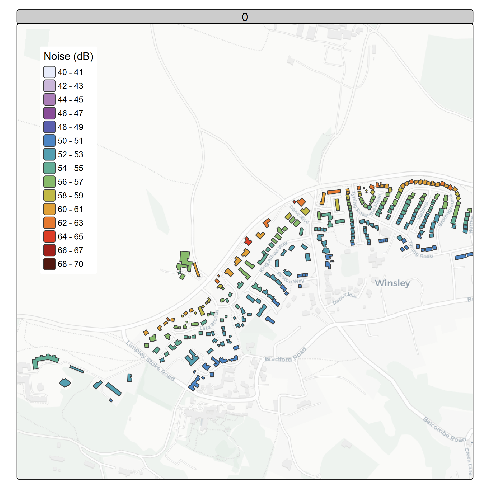
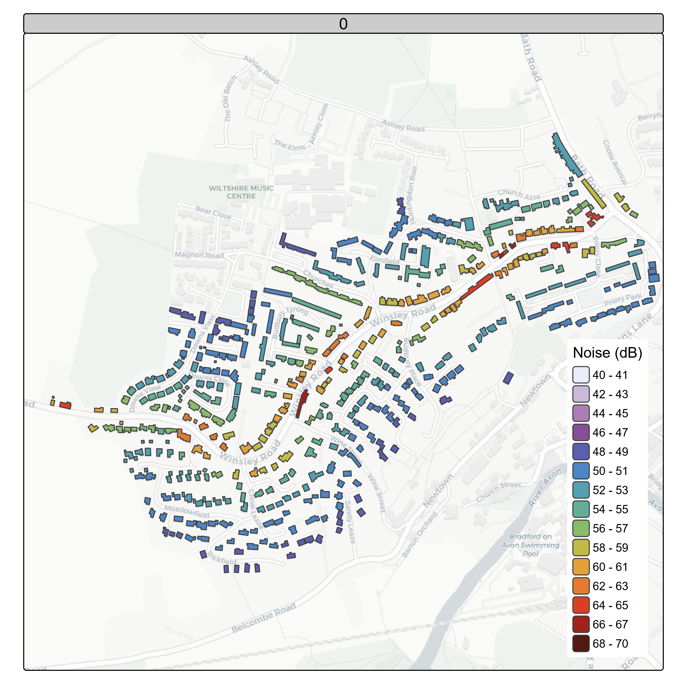

| …1 | Scenario A | Scenario B | Scenario C | Scenario D |
|---|---|---|---|---|
| Households experiencing increased daytime noise in forecast year: | 0 | 0 | 0 | 0 |
| Households experiencing reduced daytime noise in forecast year: | 0 | 94 | 115 | 379 |
| Households experiencing increased night time noise in forecast year: | 0 | 0 | 0 | 0 |
| Households experiencing reduced night time noise in forecast year: | 0 | 113 | 240 | 522 |
B3108 Noise Analysis
Introduction
The noise level at each building for each hour of a typical week has been calculated using the DfT AADT Count point 947637 along Winsley Hill, extrapolated with the typical diurnal profile using 946637 TRA0307 which gives the profile below:

These flows were applied to the full length of the road.
The noise level calculation is a screening assessment to compare between scenarios and estimate the costs benefit to the population.
This calculation does not include:
- Ground absorption
- Screening / barriers
- Reflections
- Façade corrections
- Road gradient
- Road surface correction
Vehicle Noise
\(A_i\) The vehicle-type–specific noise emission constant, referenced to a 10 m distance, taken from TAG / CRTN-based road traffic noise tables: Car = 27.7 LGV = 34.7 HGV = 39.7 \[ E_{i,10} = N_i \cdot 10^{\frac{A_i + 10 \log_{10}(v_i)}{10}} \]
where \(N_i\) is the hourly traffic flow, \(v_i\) is the mean speed (km h\(^{-1}\)), which was calculated from the google API for each hour of a typical week.
Summing up the outputs for each vehicle type: \[ E_{10} = \sum_i E_{i,10} \] Gives the L10 values for each road segment. \[ L_{10} = 10 \log_{10}(E_{10}) \]

The 10m roadside value is propagated to the building façade. \[ L_{\text{build}} = L_{10} - 10 \log_{10}\left(\frac{r}{10}\right) \] The buildings included in this calculation and their distance are shown for each road segment in the figure belowwhere:
and \(r\) is the horizontal distance from the road to the building façade (m). the from the road to the building (m).
And aggregating to assessment periods: \[ L_{\mathrm{Aeq},P} = 10 \log_{10} \left( \frac{1}{N_P} \sum_{i=1}^{N_P} 10^{L_{\mathrm{Aeq},1h,i}/10} \right) \] The current noise exposure by hour is estimated
The scenarios are described in the section The changes in noise for the main segments are shown below:
L03: Winsley Hill
Baseline situation by hour
This is the estimated noise exposure for each building within 200m

day time 07:00-23:00

night time 23:00-07:00

L04: Winsley by-pass
Baseline situation by hour
This is the estimated noise exposure for each building within 200m

day time 07:00-23:00

night time 23:00-07:00

L06: Bradford on Avon
Baseline situation by hour
This is the estimated noise exposure for each building within 200m

day time 07:00-23:00

night time 23:00-07:00

Outputs
These changes werre summarised in change matricies as required by the TAG workbook and exported to a google sheet which is linked to the Noise Assessment Workbook
The number of houses affected are shown in the table below.
The estimated cost benefit from government TAG is shown in the table below.
| cost | Scenario A | Scenario B | Scenario C | Scenario D |
|---|---|---|---|---|
| Net present value of impact on sleep disturbance (£): | 0 | 957721.93 | 1944148.32 | 4162644.0 |
| Net present value of impact on amenity (£): | 0 | 474746.27 | 583033.05 | 1832765.7 |
| Net present value of impact on AMI (£): | 0 | 160408.33 | 197226.56 | 596050.6 |
| Net present value of impact on stroke (£): | 0 | 35239.11 | 43114.15 | 141846.4 |
| Net present value of impact on dementia (£): | 0 | 53071.92 | 64931.50 | 213681.9 |
| Total | 0 | 1681187.56 | 2832453.59 | 6946988.6 |